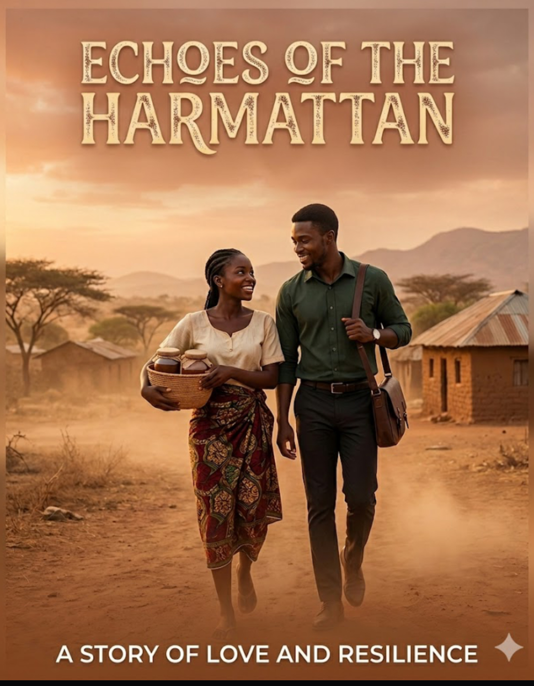
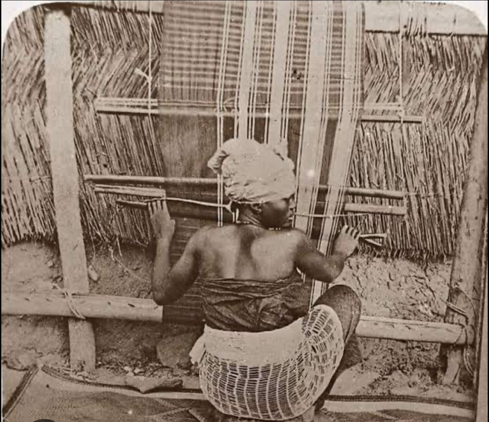
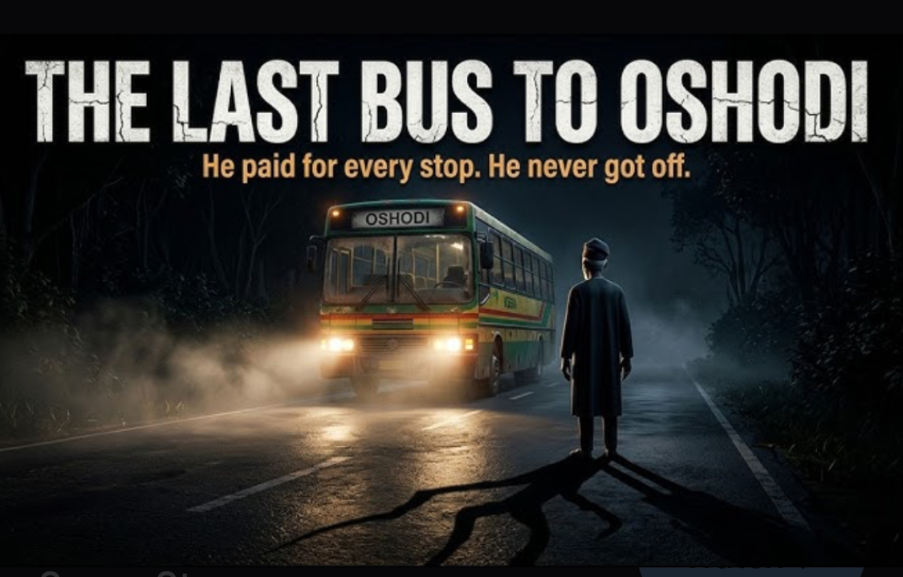

STORIES THAT
BREATHE
Nigerian film production house telling powerful African stories.
Nigerian film production house telling powerful African stories.
Founded in Nigeria, Ikúkú Media is an independent film production house dedicated to telling authentic African stories that resonate globally. "Ikúkú" (Igbo) means wind — invisible yet powerful, carrying voices across borders and generations.
We believe cinema is more than entertainment. It's a vessel for culture, identity, memory, and social change. From gritty Nollywood dramas to international co-productions, our work honors the complexity and beauty of the African experience.
"The wind does not choose where it blows. Neither do great stories."
— Founder & Creative Director

Drama • 18+

Documentary

Short Film